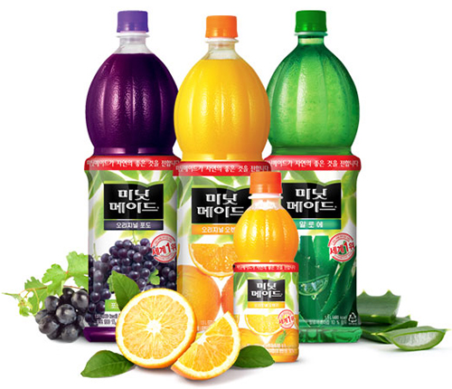
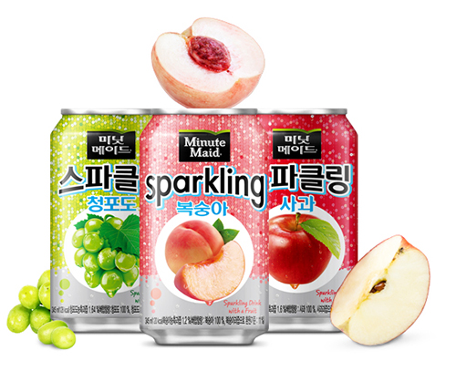
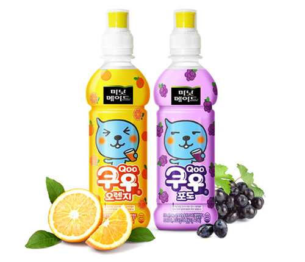
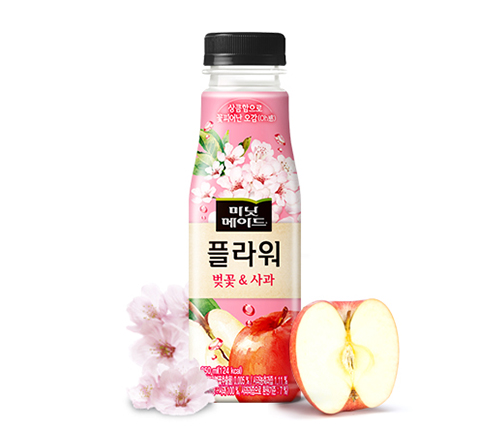

주스
온 가족이 즐기는 과즙의 상큼함, 주스 브랜드입니다.
세계 1위 프리미엄 주스 미닛메이드, 고품격 주스 선키스트등,
변화하는 소비자의 입맛과 라이프스타일에 맞게 100% 착즙주스부터
어린이 제품 미닛메이드 쿠우까지 다양한 제품 라인업을 보유하고 있습니다.
-

자연의 풍부한 영양과 맛을 담은 세계 판매 1위 주스
미닛메이드
미닛메이드는 언제 과일과 야채 등이 알맞게 익어 수확하기 좋은 때인지,
누가 세심하게 정성들여 키우는지, 과일을 어떻게 좋은 주스로 만들 수 있는지를
연구하고 고민합니다. 그래서, 미닛메이드는 좋은 과일과 야채가 자라나는
햇살 가득한 꿈의 농장을 찾기 위해 항상 노력한답니다.-
- · 제품명
- 미닛메이드
-
- · 제품종류
- 과채주스
-
- · 맛
- 오렌지, 포도, 알로에, 망고, 제주감귤, 매실
-
- · 용량
-
- PET
1.5L / 350ml
- 병 180ml
-
-

미닛메이드에서 선보이는 상큼짜릿한 과즙 스파클링
미닛메이드 스파클링
달콤상큼한 과즙에 톡 쏘는 스파클링이 가미된 과즙 스파클링 음료로
가벼운 기분전환용으로 언제 어디서나 부담 없이 마실 수 있습니다.-
- · 제품명
- 미닛메이드 스파클링
-
- · 제품종류
- 탄산
-
- · 맛
- 청포도, 사과, 복숭아
-
- · 용량
-
- PET
1.25L
- CAN 345ml
-
-

합성착색료 없이 건강한 어린이 과일주스
미닛메이드 쿠우
새콤 달콤한 과즙과 비타민 C, 칼슘까지 들어있어
어린이들이 좋아하는 맛있는 과실 음료로 세계 판매 1위 주스 브랜드
미닛메이드의 노하우와 철학을 쿠우에 담아 더욱 건강한 어린이 음료-
- · 제품명
- 미닛메이드 쿠우
-
- · 제품종류
- 과채음료
-
- · 맛
- 오렌지, 포도
-
- · 용량
- - PET 300ml
-
-

상큼함으로 꽃피어난 오감!
미닛메이드 플라워
상큼한 과즙과 싱그러운 꽃 향기가 선사하는 즉각적인 기분전환!
천연 꽃향 추출물이 주는 꽃 본연의 맛과 향의 미닛메이드 플라워는
세계 1위 주스 브랜드 미닛메이드가 보증하는 고퀄리티 과즙음료 입니다.-
- · 제품명
- 미닛메이드 플라워
-
- · 제품종류
- 혼합음료(벚꽃&사과)
-
- · 맛
- 벚꽃&사과
-
- · 용량
- - PET 350ml
-